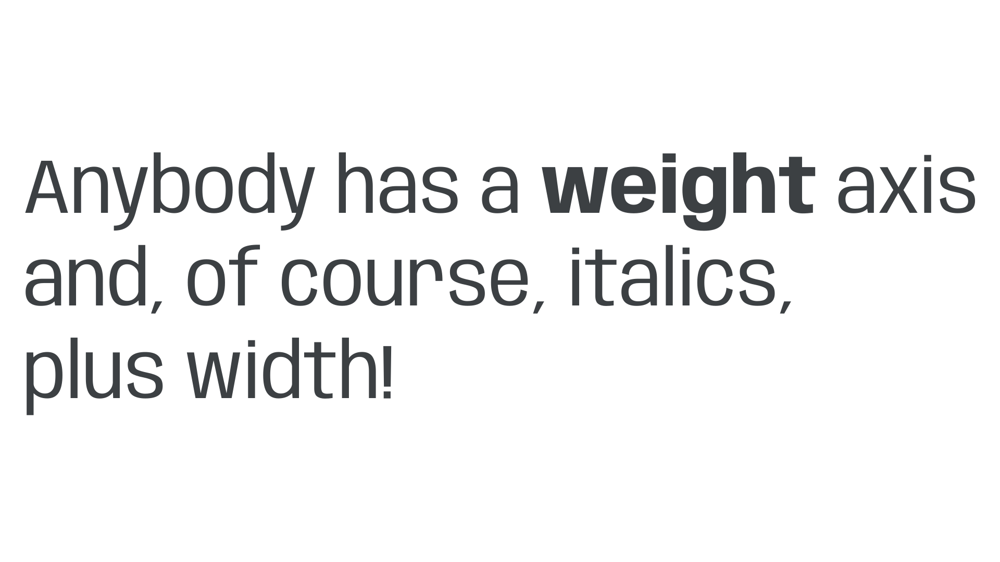
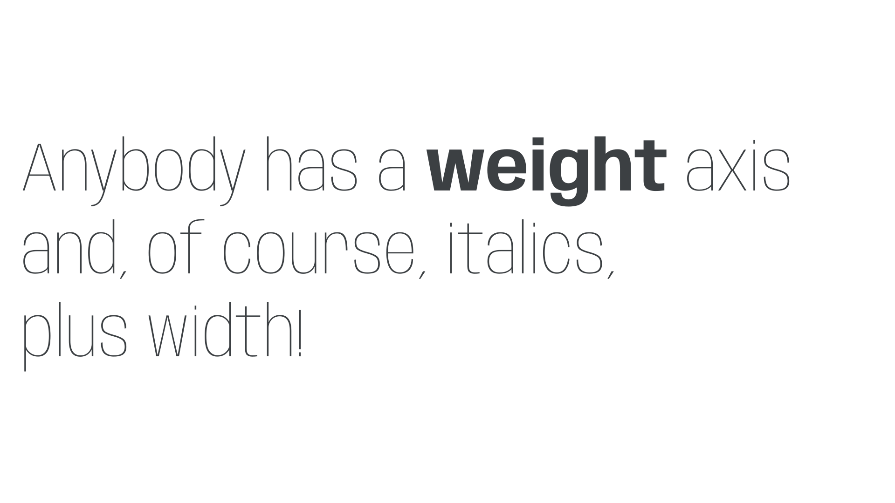
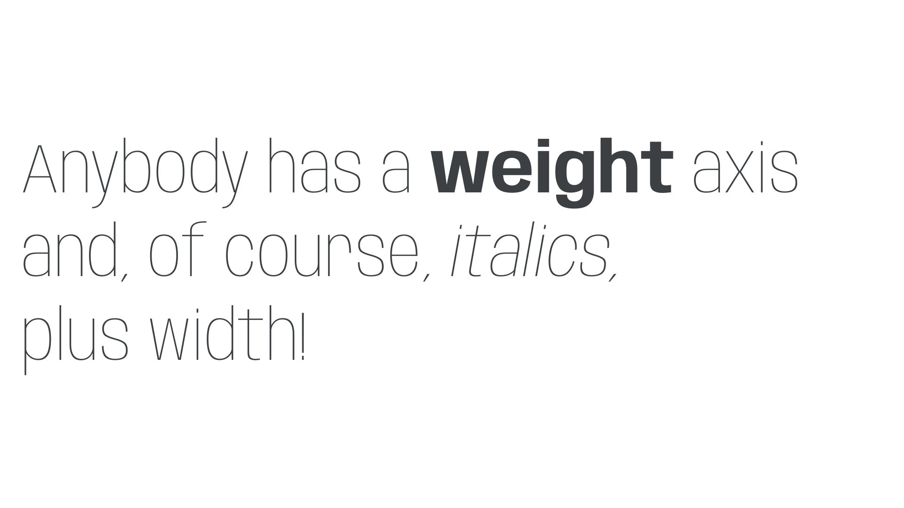
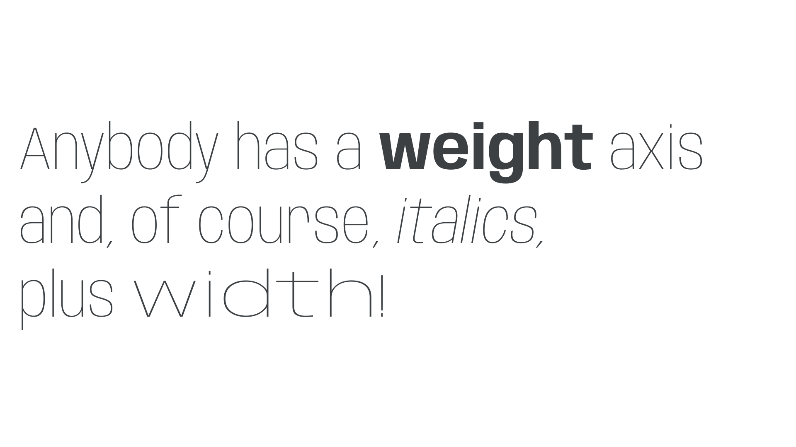

Switching from static to variable fonts
By Elliot Jay Stocks · Google Fonts Knowledge.
Reviewed by Laurence Penney.
Original article · Source on GitHub · CC BY-SA 4.0. Text, illustrations and existing credits reproduced from the licensed Knowledge repository. Open Shelf adapted the layout and links; these adaptations are also CC BY-SA 4.0. No endorsement implied.
For many designers, implementing variable fonts on a website might mean treating the project as a blank canvas, and using a brand new typeface to experiment with the possibilities variable fonts offer. However, swapping out our static fonts for variable ones can be a useful way of dipping your toes into this new world. Plus, moving from a typeface’s static fonts to its variable cousins offers some advantages: With the overall typographic system tried and tested, we’re not actually changing that much; it’s more of a case of finessing our typography—and saving some data while we’re at it.
Manipulating the first axis
Let’s test this out and make the move from the static version of Anybody, by Tyler Finck, to its newer, variable version. This font contains three variable axes: Weight (wght), Italic (ital), and Width (wdth). But before we get into the axes themselves, we first need to actually load the variable fonts. Assuming we’re using the Google Fonts API (of course, we could always download the font files and self-host them), we’ll update the line in our HTML’s head—which is currently using the Regular (400), Regular Italic, Bold (700), and Bold Italic styles—from this:
<link href="https://fonts.googleapis.com/css2?family=Anybody:ital,wght@0,400;0,700;1,400;1,700&display=swap" rel="stylesheet">
To this:
<link href="https://fonts.googleapis.com/css2?family=Anybody:ital,wdth,wght@0,50..150,100..900;1,50..150,100..900&display=swap" rel="stylesheet">
All we’re changing here is moving from static instances to a range of values, with each .. surrounded by the minimum and maximum values of the axis. In terms of weight, this range then allows us to use any value between 100 and 900 for both our upright and italic text. (We’re also adding another axis, wdth, which has a range of 50–150, but more on that in a second.)
In the static world, we had font-weight declarations that look like this:
body {
font-weight: 400;
}
strong {
font-weight: 700;
}

Well, good news, because they still look like that! Although specialized variable axes require us to use font-variation-settings to control them, the weight axis has been mapped to the font-weight property we all know and love.
So now let’s get a bit more inventive and harness the power of variable fonts to tweak those weights. We’ll make our body text a lot lighter (147 rather than 400) and our strong text ever-so-slightly lighter than a usual bold (663 rather than 700):
body {
font-weight: 147;
}
strong {
font-weight: 663;
}

Note: It’s not just the strong element that needs to be updated, but also any HTML element where the browser stylesheet is applying a bold weight. Typically, unless they’ve been overridden already, this includes b, h1 to h6, and several other elements, including table headings (th) and dictionary definitions (dd). These will all need the setting of 663, too (or their own custom weight if you’d prefer).
The italic axis
Next, let’s style our italics. Because Anybody’s italic variations are in a separate font file, we can keep using font-style: italic, just as we would with a static font:
em {
font-style: italic;
}

Switching italics on and off in this case is very easy because it essentially just swaps between the two files. When uprights and italics (or obliques) are bundled within the same variable font file, we need to employ font-variation-settings and use the slnt axis—see below.
Manipulating an additional axis
It’s time to move onto our third axis: Width (wdth). In this font in particular, width wasn’t exposed until the release of this variable version, so it’s a great excuse to make use of variable fonts’ powers of further refinement.
Once again, the Width axis has been mapped to familiar CSS: we can manipulate it using the font-stretch property. The only difference is that, unlike weight, we need to declare it as a percentage. Let’s give our span element the maximum width value of 150%:
span {
font-stretch: 150%;
}

And while we’re at it, why not make everything but the span a little more condensed with a font-stretch value of 72%?
body {
font-stretch: 72%;
}
With some very subtle tweaks to some already familiar code, we’ve switched from the static to variable version of Anybody, and used the power of variable fonts to give our text more stylistic variation that wouldn’t have been possible before, and all without loading multiple font files. Let’s review our final CSS:
body {
font-family: "Anybody", sans-serif;
font-stretch: 72%;
font-weight: 147;
}
strong {
font-weight: 663;
}
em {
font-style: italic;
}
span {
font-stretch: 150%;
}
Going further
In this example, we’ve stuck to axes that have been mapped to existing CSS properties. If you’re using a font that has a different axis, such as the aforementioned Slant (slnt), you’ll need to use font-variation-settings to control that parameter. For example:
body {
font-variation-settings: "slnt" 0;
}
em {
font-variation-settings: "slnt" 1;
}
Note that font-variation-settings is also required for any custom axes. For more information, please see “Styling type on the web with variable fonts.”